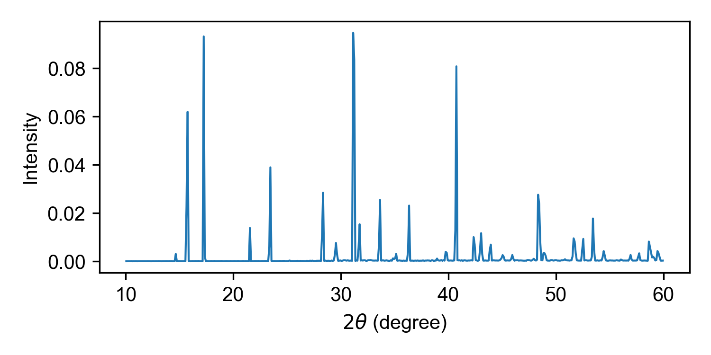
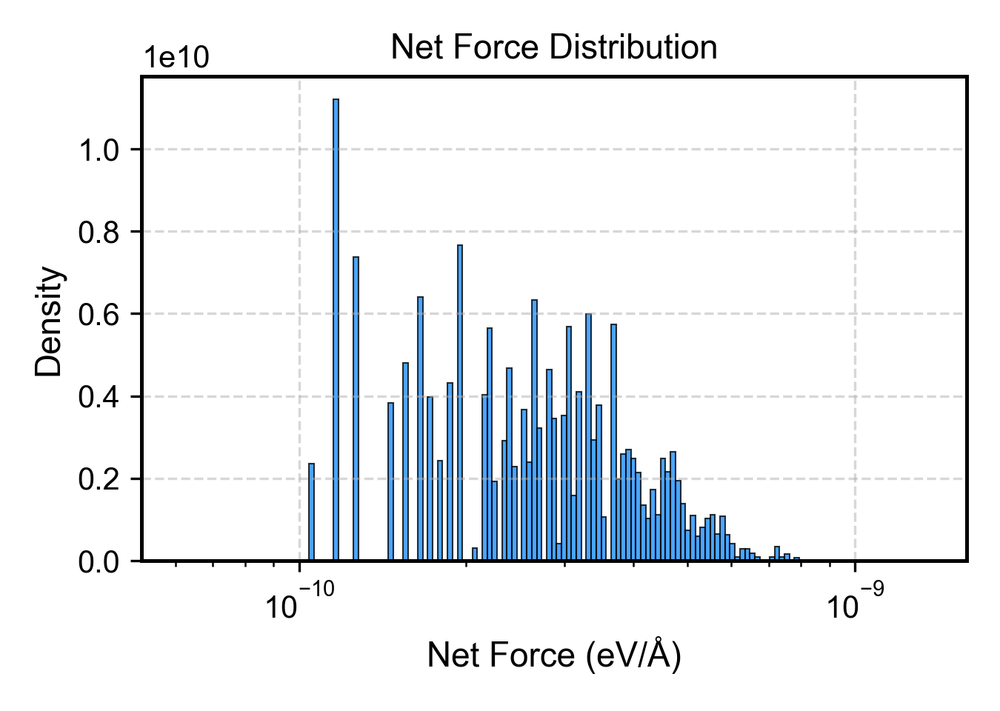

Thermodynamic Properties
thermo (plt_thermo.py)
Primary script for comprehensive thermodynamic property visualization.
Input File: thermo.out
gpumdkit.sh -plt thermo
thermo2 / thermo3 (plt_thermo2.py, plt_thermo3.py)
Alternative thermodynamic visualization with different styles.
Input File: thermo.out
gpumdkit.sh -plt thermo2
gpumdkit.sh -plt thermo3Structural Analysis
rdf (plt_rdf.py)
Plots all RDF value columns in rdf.out (the radius column is used as the x-axis).
Input File: rdf.out
gpumdkit.sh -plt rdf # Plot all RDF pairs
gpumdkit.sh -plt rdf save # Save the figure as rdf.pngThe rdf plotter does not select a single column. Use rdf_pmf when a
specific RDF output column is needed for PMF analysis.
RDF output:

xrd (plt_xrd.py)
Plots the X-ray diffraction (XRD) output generated by calculator 413.
Input File: xrd.out by default; an alternative XRD output path can be
passed as the first argument.
gpumdkit.sh -plt xrd
gpumdkit.sh -plt xrd path/to/xrd.out saveWith save, the figure is written to xrd.png in the current working
directory.
Example:

xrd_comp (plt_xrd_comp.py)
Compares XRD curves from several temperature folders in the current working
directory. Each folder must be named <temperature>K and contain an
xrd.out file written by calculator 413. Curves are stacked from high
temperature at the top to low temperature at the bottom.
Run the comparison from the directory containing the *K subdirectories.
This command does not take a directory argument:
cd /path/to/xrd_series
gpumdkit.sh -plt xrd_comp
gpumdkit.sh -plt xrd_comp saveWith save, the figure is written to xrd_comp.png in the current working
directory.
rdf_pmf (plt_rdf_pmf.py)
Plots RDF combined with potential of mean force (PMF).
Input File: rdf.out
gpumdkit.sh -plt rdf_pmf
gpumdkit.sh -plt rdf_pmf 300 2 saveBoth arguments are optional: the temperature in K used to convert the RDF into a PMF, and column_index, the rdf.out column to use (column 2 is the total RDF; columns 3 and above are pair RDFs).
vac (plt_vac.py)
Plots velocity autocorrelation function (VAC). Useful for analyzing phonon properties and atomic dynamics.
Input File: sdc.out written by GPUMD compute_sdc (the VAC columns are
read from this file by the plotting script). This is separate from the
msd.out input used by -plt sdc and -plt msd_sdc.
Output: Interactive plot or vac.png (with save option)
gpumdkit.sh -plt vaccohesive (plt_cohesive.py)
Plots cohesive energy curve from cohesive.out. Useful for analyzing lattice stability and equilibrium lattice constants.
Input File: cohesive.out (isotropic scaling factor vs cohesive energy)
Output: Interactive plot or cohesive.png (with save option)
gpumdkit.sh -plt cohesivenet_force (plt_net_force.py)
Plots distribution of net forces on structures, useful for identifying problematic configurations.
Input File: train.xyz (extxyz format)
gpumdkit.sh -plt net_force train.xyzReference: arXiv:2510.19774

Plane-Grid Plot for Polar Materials
This workflow maps displacement or polarization data onto a grid and plots selected plane profiles. For detailed usage and real-world examples, see Polar Material Analysis.
Dependency:
pip3 install git+https://github.com/MoseyQAQ/ferrodispcalc.gitTypical upstream steps:
gpumdkit.sh -calc nlist -i model.xyz -c 4 -n 12 -C Pb Sr -E O
gpumdkit.sh -calc disp -i movie.xyz -n nl-Pb_Sr-O.dat -o displacements.dat
gpumdkit.sh -calc avg-struct -i movie.xyz -l 0.2 -o averaged_structure.xyzUsage:
gpumdkit.sh -plt plane-grid -i averaged_structure.xyz -d displacements.dat -e Pb Sr
gpumdkit.sh -plt plane-grid -i averaged_structure.xyz -d displacements.dat -e Pb Sr --select-xy 0 1